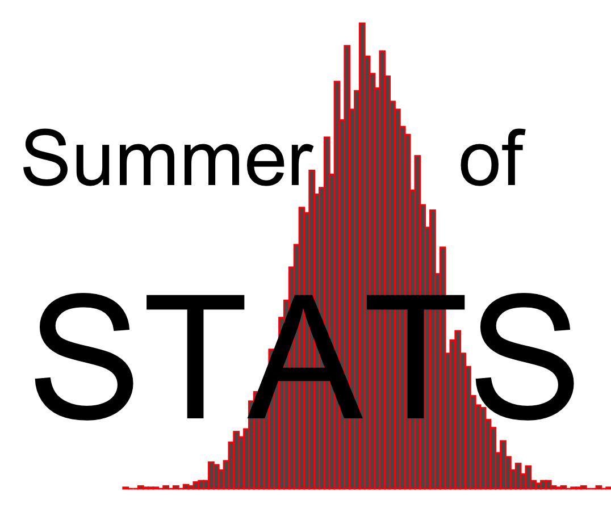
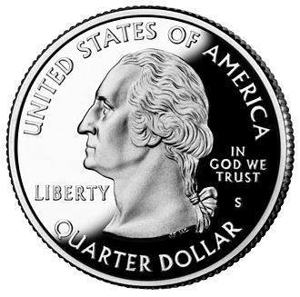

(or “Why Faster Isn’t Always Better”)
Programming Note…
One year in, and I am still going! My Master’s program has covered an insane amount of content, and I’ve gained an appreciation of how much there is to still learn.
With so many new ideas bouncing around in my head from this past year, I’ve decided to resurrect Summer of Stats for another summer!
I’m mixing up the format - rather than cover a specific topic, these posts will focus on real-life problems and how statistical thinking can help.
To start, let’s talk about something we do every day: Guessing!
Welcome to Summer of Stats 2.0!
It always feels nice to guess correctly.

“Called it.”
Maybe that’s why I enjoy statistics so much.
Why? Because statistics is all about guessing. With statistics, we real-life observations (also called “data”) plus some math to make our guesses.
In essence, statistics is just (extremely) educated guessing.
So, any time you make a guess about something, you are implicitly using a statistical model. And, if you’re not, chances are you’re making a bad guess.
How We Guess
Often, we have unwritten rules for how we guess.
Quick: guess WHERE the next value is most likely to pop up:
 Intuitively, you probably picked a value that is close to the average (or mean) of our data:
Intuitively, you probably picked a value that is close to the average (or mean) of our data:

Here, you can see how closely your gut-feeling lines up with with a purely statistical guess.
How to Guess Like a Pro
It’s worth noting that our statistical guess (the mean) is superior in many important ways.
1. Our answer is repeatable
With statistics, our guess is based on data. So, it does not change depending on:
- how much sleep we got the night before
- how hungry we feel
- how long our current Zoom meeting is running over.
Two people looking at the same data will end up with the same answer.

2. Our answer is precise
When we guess, we often have a “feel” for the range of values we expect to see.
However, statistics can help us define those bounds more precisely. (via Confidence Intervals)

3. Our answer is (potentially) optimal
Probably one of the coolest aspects of statistics is that, in certain cases, we can actually PROVE that your guess is the best one possible.
We’ll skip the math - but, in essence, we can use statistics to become “super-guessers”. And who doesn’t want that super-power?
Guessing in Daily Life
One practical lesson that you can take away is:
Your “gut feeling” can be very wrong.
Though we often get by using our intuition, it can only get us so far. By using statistics, we can actually make better decisions.
Let’s review a practical example from everyday life: arriving on time.
Will I Miss My Flight?
Nobody likes being at an airport. It’s a loud, crowded, and stressful place. People yell at you to take your shoes off.
“No, wait, DON’T take your shoes off. It’s Thursday.”
So, if you’re like me, you wait until the absolute last minute to leave for your trip. Because time is tight, you want to find fastest route to drive to the airport.
Google gives you 2 choices:
| Route | Travel Time | Variation* |
|---|---|---|
| I-71 | 20 minutes | 10 minutes |
| I-471 | 30 minutes | 5 minutes |
- The first option is shorter but has more unpredictable traffic
- The second option is longer but doesn’t get as congested
*assume traffic is exponentially distributed
So which route would you pick?
A Counter-Intuitive Guess
If you picked the “shorter” route (I-71), you’d be wrong.
The issue is VARIATION - road congestion means you never know for certain how long your drive will be. And this uncertainty ends up having a big impact.
If you don’t believe me, below are the results from 100 “hypothetical” trips on each route:

So, you might arrive faster on I-71…but you also might not.
In order to be 95% confident that you will arrive on time, here’s when you’d have to leave for each route:
| Route | Budgeted Time |
|---|---|
| I-71 | 60 minutes |
| I-471 | 44 minutes |
So, our “shorter” route (on paper) is actually a much worse option.
What Are My Odds?
Thinking about it another way: say we allowed 40 minutes for travel time to the airport.
- If we took I-471, we’d arrive on time 91% of the time
- If we took I-71, we’d arrive on time 82% of the time
And since that may be the difference between making your flight to Hawaii or being stuck at home, I’d definitely opt to take I-471.
Summing Up
Statistics pop up everywhere in life because they are so effective at giving real-world answers to many questions.
While the math can sometimes look scary, my hope is that I can convince you that everyone can benefit from statistical thinking.
After all, we can’t KNOW everything. So, it often pays to be good guesser.
Up Next: Assumptions
Next week, we will discuss the importance of making (and keeping track of) assumptions when we make guesses.
===========================
R code used to generate plots:
- Some Guessing
library(ggplot2)
library(gganimate)
library(ggrepel)
library(data.table)
library(gridExtra)
set.seed(052825)
# Random draws
rand_draws <- data.table( ID = seq(1:10),
V1 = rnorm(10, 500, 20))
base_plot <- ggplot(rand_draws, aes(x=V1, y=0)) +
coord_cartesian(ylim = c(-5,5), xlim = c(450, 550)) +
theme_void()
### Plot data
rand_plot <- base_plot +
geom_point(shape="X", col="white", size=.01) +
transition_time(ID) +
shadow_mark(colour = 'red', size = 10) +
annotate("text", x = 535, y = -1.7, label = "Summer of Stats", col="grey80", size = 5)
animate(rand_plot, duration = 5,renderer = gifski_renderer(loop = F))
### Plot statistical guess
mean_x <- rand_draws[,mean(V1)]
my_guess <- 504
stat_plot <-
base_plot +
geom_point(shape="X", col="red", size=10) +
geom_segment(aes(x = my_guess, xend = my_guess, y = -4, yend = 1),
lwd = 1, col = "black") +
geom_segment(aes(x = mean_x, xend = mean_x, y = -2, yend = 5),
lwd = 1, col = "darkred", linetype='dashed') +
#geom_text_repel(aes(label = round(V1,0)), size = 10, nudge_y = 2, direction = "x", max.overlaps = Inf, segment.color = "grey80", min.segment.length = 0, box.padding = 0.5) +
geom_label(aes(x=mean_x, y=4, label = round(mean_x)), size = 12, fill = "lightyellow") +
geom_label(aes(x=my_guess, y=-4, label = my_guess), size = 12, fill = "lightyellow") +
theme(legend.position="none") +
annotate("text", x = 522, y = 4, label = "(Average)", col="black", size = 8) +
annotate("text", x = 520, y = -4, label = "(My Guess)", col="black", size = 8) +
annotate("text", x = 535, y = -1.7, label = "Summer of Stats", col="grey80", size = 5)
stat_plot
### Two guessers
guess_plot <-
base_plot +
geom_point(shape="X", col="red", size=10) +
geom_segment(aes(x = mean_x, xend = mean_x, y = -2, yend = 5),
lwd = 1, col = "darkred", linetype='dashed') +
geom_label(aes(x=mean_x, y=4, label = round(mean_x,0)), size = 12, fill = "lightyellow") +
theme(legend.position="none")
person_1 <- guess_plot +
annotate("text", x = 500, y = -3, label = "PERSON 1", size = 15)
person_2 <- guess_plot +
annotate("text", x = 500, y = -3, label = "PERSON 2", size = 15) +
annotate("text", x = 535, y = -5, label = "Summer of Stats", col="grey80", size = 5)
grid.arrange(person_1, person_2, ncol=2)
### Confidence interval
mean_x <- rand_draws[,mean(V1)]
std_dev <- rand_draws[,sd(V1)]/10
high_x <- mean_x + 1.96*std_dev
low_x <- mean_x - 1.96*std_dev
base_plot +
geom_point(shape="X", col="red", size=10) +
geom_rect(aes(xmin = low_x, xmax = high_x,
ymin = -.75, ymax = .75), alpha = 0.01) +
geom_segment(aes(x = low_x, xend = low_x, y = -1, yend = 1)) +
geom_segment(aes(x = high_x, xend = high_x, y = -1, yend = 1)) +
geom_label(aes(x=low_x+5, y=2, label = round(low_x,0)), size = 12, fill = "lightyellow") +
geom_label(aes(x=high_x-5, y=2, label = round(high_x,0)), size = 12, fill = "lightyellow") +
annotate("text", x = 510, y = -1.5, label = "(95% Confidence Interval)", col="black", size = 8) +
annotate("text", x = 542, y = -2, label = "Summer of Stats", col="grey80", size = 5)
- Fighting Traffic
library(knitr)
library(kableExtra)
set.seed(060125)
# Outline each route option
I_71_desc <- c("20 minutes", "10 minutes")
I_471_desc <- c("30 minutes", "5 minutes")
route_options <- rbind(I_71_desc, I_471_desc)
route_options <- cbind(c("I-71", "I-471"),
route_options)
rownames(route_options) <- NULL
colnames(route_options) <- c("Route", "Travel Time", "Variation*")
### Display data as a table
options(kableExtra.html.bsTable = TRUE)
kable(route_options, align = c("c","c")) |> kableExtra::kable_styling(bootstrap_options = c("striped", "hover"), full_width = FALSE)
# Model traffic for each route
# (Traffic ONLY adds to travel time - sorry guys!)
I_71_traffic <- rexp(100,1/10)
I_471_traffic <- rexp(100,1/5)
# Do 100 simulated drives
I_71 <- 20 + I_71_traffic
I_471 <- 30 + I_471_traffic
### Compare trip times
p1 <- ggplot(as.data.table(I_71), aes(x=I_71)) +
geom_density(fill="blue", alpha=.2) +
coord_cartesian(xlim=c(20,70)) +
theme_minimal() + xlab("") + ylab("") + theme(axis.text.y=element_blank()) +
theme(axis.text.x = element_text(face="bold", color="darkred", size=15)) +
annotate("text", x = 27, y = .02, label = "Best Case: \n20 mins", size = 5) +
annotate("text", x = 65, y = .02, label = "Worst Case: \n70+ mins!", size = 5) +
annotate("text", x = 55, y = .04, label = "I-71", col="darkred", size = 15)
p2 <- ggplot(as.data.table(I_471), aes(x=I_471)) +
geom_density(fill="blue", alpha=.2) +
coord_cartesian(xlim=c(20,70)) +
theme_minimal() + xlab("Travel Time (mins)") + ylab("") + theme(axis.text.y=element_blank()) +
theme(axis.text.x = element_text(face="bold", color="darkred", size=15)) +
annotate("text", x = 23, y = .035, label = "Best Case: \n30 mins", size = 5) +
annotate("text", x = 55, y = .035, label = "Worst Case: \n50 mins", size = 5) +
annotate("text", x = 55, y = .12, label = "I-471", col="darkred", size = 15) +
annotate("text", x = 65, y = .015, label = "Summer of Stats", col="grey80", size = 4)
grid.arrange(p1, p2, ncol=1)
# Find duration of the fastest 95 runs (ie. our 95% confidence interval for arriving on time)
travel_times <- rbind(sort(I_71)[96] |> round(0) |> paste0(" minutes"),
sort(I_471)[96] |> round(0) |> paste0(" minutes"))
travel_times <- cbind(c("I-71", "I-471"),
travel_times)
colnames(travel_times) <- c("Route", "Budgeted Time")
### Display data as a table
options(kableExtra.html.bsTable = TRUE)
kable(travel_times, align = c("c","c")) |> kableExtra::kable_styling(bootstrap_options = c("striped", "hover"), full_width = FALSE)